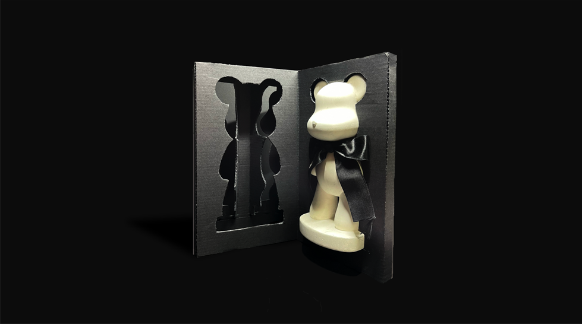

Packaging Way

Final Cut

카밍 캔들의 방향제 패키지는 골판지로 제작되었으며, 방향제를 고정할 수
있는 틀이 있다.
곰돌이 석고 방향제의 형태를 살리면서도 안전하게
보호할 수 있는 패키지 디자인이다.
하단에서 방향제를 전체적으로 한번 잡아주고, 상단의 방향제 모양 틀 2개로
앞부분을 잡아준다. 종이를 낭비하지 않기 위해 패키지 박스의 단면을 잘라
틀을 만들고, 그 또한 방향제의 형태를 살린다.
마지막으로 외부
박스로 패키지와 방향제를 한 번 더 보호해 주며 앞면을 투명하게 만들어
소비자가 대략적인 방향제의 형태를 보고 구매할 수 있게 한다.
©Sangmyung University Department of Communication Design / Su Yeon Kim